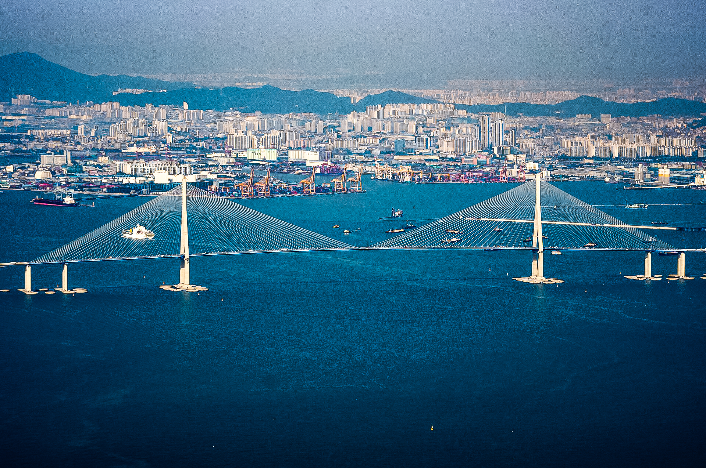
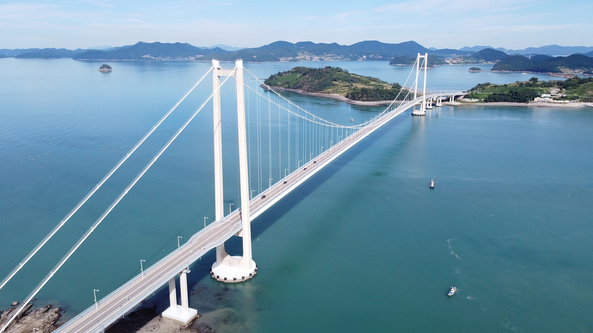

저희는 안전하고 효율적이며 공기역학적으로 건전한 교량 설계를 제공합니다. 케이블 지지, 아치, 트러스 교량부터 풍력 효과를 조기에 평가하여 자신감 있는 설계 결정과 장기적인 성능을 지원합니다. 공기역학 시뮬레이션, 풍동 연구, 수치 모델을 사용하여 불안정성을 식별하고 풍하중을 예측하며 설계 조정을 평가합니다. 테스트 결과를 안정성, 편안함, 복원력을 향상시키는 명확하고 설계 준비된 지침으로 전환합니다. 그 결과는 의도한 대로 작동하고 긍정적인 사용자 경험을 지원하며 지속적인 랜드마크가 될 수 있는 교량이 되었습니다.
인천대교는 황해를 가로지르는 길이 12.3km의 상징적인 사장교입니다. 주경간 길이 800m로 한국에서 가장 길고 세계에서도 손꼽히는 길이입니다. 초기 설계를 지원하기 위해 RWDI는 풍하중, 와류 박리, 플러터 현상, 그리고 교량 데크와 독특한 역 Y자형 타워의 공기역학적 성능을 평가하는 공탄성 연구를 수행했습니다. 분석 결과는 중요한 풍하중 권고안을 제시하고 다리의 공기역학적 안정성을 확인해 설계팀이 안전하고 효율적이며 견고한 설계를 발전시키는 데 기여했습니다.

영남대교는 팔영대교라고도 불리며, 대한민국 적금도와 영남면 사이의 바다를 가로지릅니다. 이 다리는 한국의 주요 현수교 교량 중 하나로서, 까다로운 해안 지형에 맞춘 세심한 풍하천 공학이 필요했습니다. RWDI는 실제 조건과 데크 구성에 맞춰 구조적 풍하중, 공기역학적 안정성, 풍력 유발 진동을 평가하기 위해 축소된 교량 모델을 대상으로 풍기 기후 평가, 현장 맞춤 기상 분석, 풍동 실험을 수행했습니다. 시험을 통해 다리의 안정성과 내구성이 확인되었고, 설계팀은 견고하고 효율적인 설계를 추진할 수 있는 기술적 자신감을 얻었습니다.
